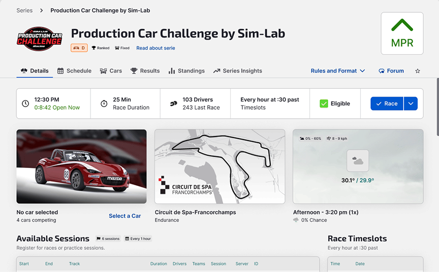
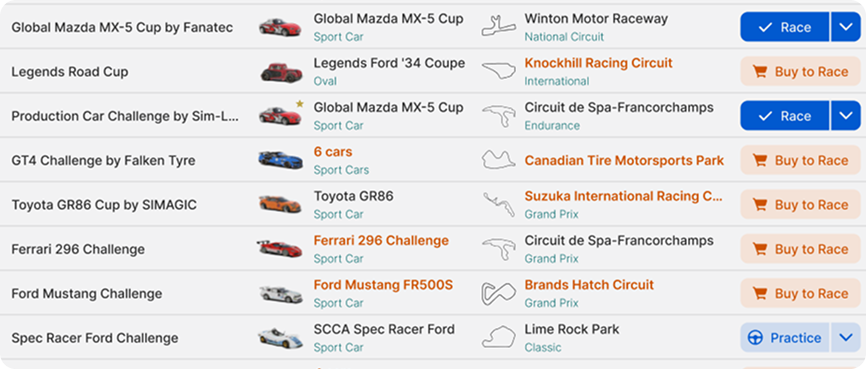
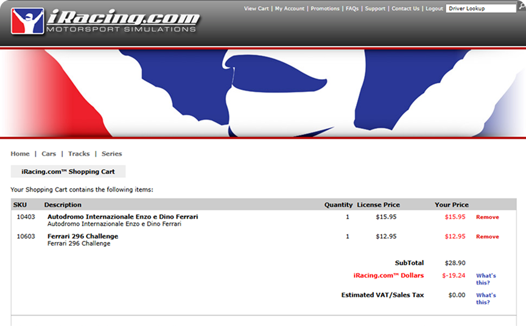
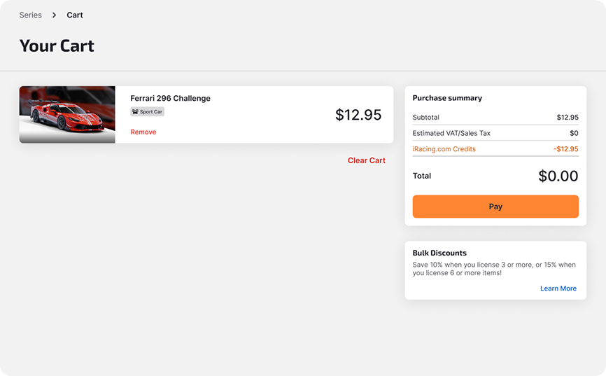

Ver Alcance
Ver Alcance
Evaluaciones Heurísticas
Empezando barato
 Ir a Encuestas
Ir a Encuestas Libertad y control por parte del usuario
Libertad y control por parte del usuario
 El usuario no puede arrepentirse de ejecutar el simulador. Una vez confirmado la acción no le queda otra que esperar a que cargue y luego cerrarlo.
El usuario no puede arrepentirse de ejecutar el simulador. Una vez confirmado la acción no le queda otra que esperar a que cargue y luego cerrarlo.
Debería incluirse o reemplazar el botón de “close” por uno de “cancel”.
Consistencia y Estándares
Las compras y el carrito se gestionan desde una web externa.
Debería existir el icon button del carrito en la esquina superior derecha de la pantalla con un badge numérico al agregar productos.
 Estética y diseño minimalista
Estética y diseño minimalista


Los detalles de una competencia puede resultar abrumador. La información mostrada compite constantemente entre ella.
Removería las tablas de “Races” y “Currently racing” y rediseñaría los controles o la forma de elegir/mostrar los autos disponibles. Mudaría la sección de “driver briefing” a otra tab de “Rules and Format”.
Encuestas
Conociendo al usuario
 Ir a Evaluaciones Heurísticas
Ir a Evaluaciones HeurísticasObjetivos
11 usuarios


 81111
81111

Resultados
Búsqueda y registro a una carrera
 “It’s hard to sort series by different disciplines and having to add tags so you only see what you CAN race and not EVERYTHING is not intuitive for a new user”
“It’s hard to sort series by different disciplines and having to add tags so you only see what you CAN race and not EVERYTHING is not intuitive for a new user”
“Pondría énfasis en remarcar al usuario qué series le sirven para subir de licencia”
“Estaría bien que a los rookies solo se les mostrase por defecto las carreras en las que pueden participar”
Detalles de una serie
“Demasiados datos innecesarios para el usuario promedio”
“Quitaría casi toda la información que no es relevante para la carrera o practica a la que te vas a unir”
“A popular complaint I see, but the way the car images are laid out in multiclass or multi manufacturer races”
 El carrito de compra
El carrito de compra
“Debería de haber más información sobre los distintos descuentos”
“Hacerlo mas moderno y poder realizarlo desde dentro de la app que corres, no tener que ir a la web.”
Hipótesis Validadas
Detalles de una serie
Esta sección resulta abrumadora. A pesar de que hay información importante, se puede reacomodar para disminuir la carga cognitiva.
El carrito de compra
El carrito de compra debería estar dentro de la plataforma y no en una web externa.
 La lista de carreras
La lista de carreras
Mejorar los filtros y la información de las carreras disminuiría la frustración y abandono de nuevos usuarios.
Mapa de Trayectoria
El viaje del simracer
 Foco
Foco

Sergio Barrientos
33 años
Analista de Sistemas
PC y Celular
Qué quiere hacer en la plataforma
- Comprar un auto
- Entrar a una carrera
Cómo le gustaría lograrlo
- Que la compra sea ágil y fácil
- Encontrar fácilmente la próxima carrera en la que pueda participar.
Escenario Hipotético
1Sergio quiere entrar al mundo del simracing y se registra a iRacing.
2Descarga y entra a la plataforma de iRacing para buscar una carrera.
3Luego de buscar en el menú de carreras utilizando filtros y tags se da cuenta de que necesita comprar un auto.
4Compra un auto por fuera de la plataforma
5Marca el auto como favorito, busca la carrera de nuevo y se registra.
 Experiencia
Experiencia
1Entrar a la UI y loguearse
1. Entra a la UI y se loguea.
2. Navega a la lista de carreras para registrarse a una carrera.
Se marea con el bombardeo visual de la lista de carreras y se confunde por no poder encontrar una carrera que esté por empezar, que pueda correr y le sirva para progresar.
2Buscar una carrera

3. Va a la tabla de carreras para utilizar los filtros para refinar la búsqueda.
4. Mira los resultados obtenidos.
5. Selecciona una carrera para ver sus detalles.
3Comprar el auto

6. Inicia proceso de compra del auto requerido.
7. Abre el navegador web y añade el auto al carrito.
Se frustra al ver que el carrito está en el navegador web antiguo de iRacing.
8. Verifica el resumen de detalles de su compra previo al pago.
9. Ingresa datos de su tarjeta y presiona aceptar.
10. Recibe mail con la confirmación
11. Descarga el contenido
4Registrarse a la carrera

12. Busca la misma carrera y abre los detalles
13. Revisa el horario y elige el auto comprado para correr
Marca como favorito el auto comprado. Le hace click a “Registrarse” y le pide elegir un auto para correr. Le molesta que tenga que volver a elegir el mismo auto que ya seleccionó como favorito.
14. Luego de registrarse, ejecuta el simulador.
Descubrimientos y soluciones
La primera vez
Un usuario nuevo no tiene idea:
- Por dónde empezar
- Por qué hay tantas carreras
- Por qué no puede participar en todas
- Cómo funciona el horario fijo
Solución
Nueva vista License Progress para ayudar a los novatos a progresar sus cuentas y acceder a más contenido.
Detalles de carreras

Problemas
- Dificultad para ver los autos para elegir
- Demasiada información (reglas, formatos, 3 tablas, todo de golpe)
Soluciones
- Nueva tab para la sección “Cars”
- Reordenamiento y resumen de información en 2 tablas
Lista de carreras


Problema
- El usuario no sabe a simple vista qué debe comprar para participar
Solución
- Nombre del auto y/o pista en color Naranja Carrito
Carrito de compras


Problema
- El carrito está por fuera de la plataforma, en la web
Solución
- Rediseñar el carrito dentro de la plataforma.
Lean UX Canvas
Pensando en el negocio
Problema del Negocio
iRacing ofrece un servicio de simracing muy envidiado por la competencia la cual se basa en la cantidad de participación de la comunidad. La clave para mantener esa participación es que el usuario no abandone el servicio por diferentes causas.
Arquetipos de Usuario
Usuarios entre 20 y 50 años con suficiente poder adquisitivo que disfruten del automovilismo y quieran entrar al mundo del simracing.
Sergio tiene 37 años. Es una persona muy apasionada por el automovilismo. En su tiempo libre, le encanta ver los findes de F1, ver películas y series, escuchar música, y correr en los diferentes simuladores del mercado.
Utiliza iRacing para competir y plantearse a sí mismo un desafío más grande. Mejorar su irating de piloto y aumentar su licencia para poder competir con mejores autos y en las mejores pistas.
Soluciones
- Nueva vista License Progress para ayudar a los novatos a progresar sus cuentas y acceder a más contenido.
- Nueva sección de “Cars” y reordenamiento de la información
- Añadir en la esquina superior derecha al lado del perfil un icon button de carrito para poder acceder al carrito luego de añadir productos.
- Procesar los pagos dentro de la plataforma y rediseñar los mismos pasos de la web.
- Remover algunas columnas innecesarias de la tabla de carreras para añadir el auto favorito seleccionado.
- Colorear el nombre de los autos y pistas que necesitan comprarse, como indicador para el usuario de qué NO tiene.
- Cambiar el botón de “registro” por un botón menú para dar más opciones solo disponibles ahora en los detalles.
Resultados para el Negocio
- Aumentar un 20% la permanencia de nuevos usuarios en el servicio en un rango de 3 meses
- Aumentar el Average Order Value 40% del carrito de compras
Resultados para el Usuario
- Realizar compras sin abandonar la plataforma.
- Buscar y encontrar carreras más rápidamente.
- Acelerar el registro a una carrera.
- Guía práctica para subir de licencias.
Hipótesis
Creemos que se logrará aumentar la permanencia de usuarios nuevos si se dejan activados los filtros y tags más importantes y mejorando su visibilidad en la pantalla.
Podemos aumentar el Average Order Value incorporando el carrito y el flujo de la web del proceso de compra en la UI.
Podemos mejorar la experiencia del usuario promedio ajustando la información mostrada en los detalles de serie y permitiendo registrarse con el auto favorito seleccionado a las carreras.
Siguiente elemento UX
Pero también están...
Definiendo la arquitectura de información y la interacción de la interfaz.
EsqueletoOrganizando los distintos elementos de información de la interfaz y creando los wireframes en media fidelidad.
Definiendo el sistema de diseño y los wireframes en alta fidelidad. Prototipo con animaciones y pruebas de usabilidad.